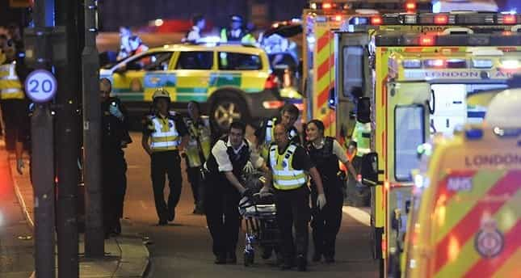
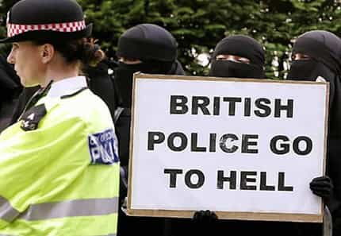
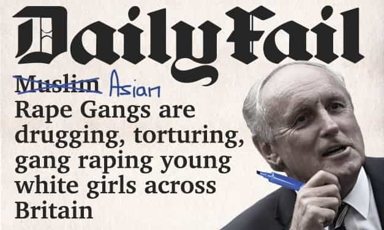
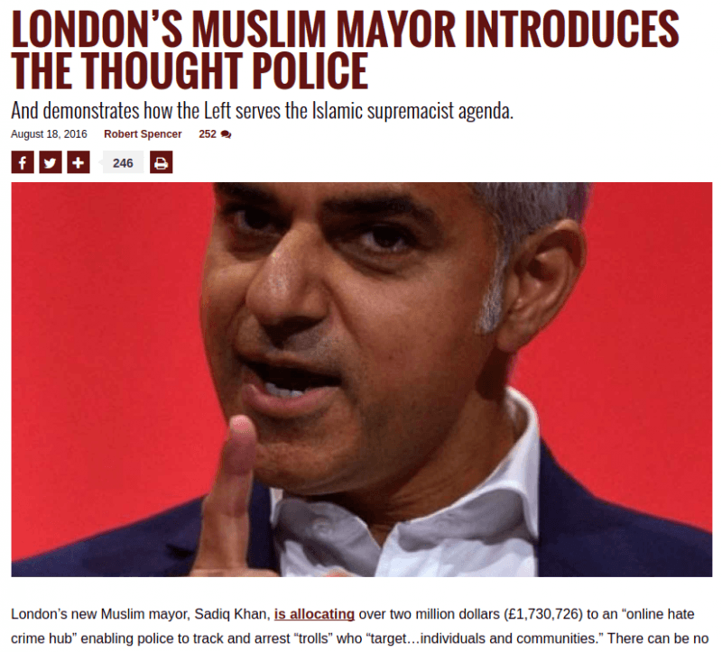
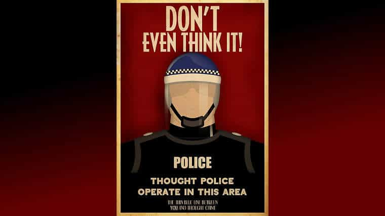

An ageing millennial, recently red pilled and on a mission to restore common sense and promote traditional values. Fairly well travelled and bilingual with an interest in history and currently living in the UK.


I’ve lived in England for twenty-two years and observed its steady decline into a shivering basket case terrified of offensive language. Here are nine reasons to avoid the UK but England in particular, and if you are living here you should consider leaving.
The average man is not masculine. He has very little courage and will do anything to avoid conflict. He covers up his insecurities with a mask of pseudo confidence which manifests into overly positive extroversion (usually after consuming alcohol) or he simply sinks into apprehension and fear. Either way, years of feminism has crushed mainstream masculinity in the UK.
The average person really cares what others think of them Subsequently it’s hard to see past the mask one wears and genuine interactions are rare unless alcohol is involved. Yes witty banter is part of the culture but it is a form of ego protection and can actually damage one’s self esteem if lacking in character strength.
Britain is known for its good manners, but people are almost too polite and courteous, as if they’re constantly trying to avoid awkward silences and trying to break the ice with a tooth pick instead of just putting it out there and risking their own egos.
Society is very civilised and pleasant on the surface. However this has led to a collective of tension as most people do not want to stick out and will compromise their own well-being for fear of judgement, which has subsequently manifested itself on a societal level and created a sort of nanny state.
Reciprocating common courtesy is arguably part of human nature, however it has really become deeply entrenched in British culture. When political correctness found its way in, the two made for an extremely effective tool for manipulation of the general public. As your average man is becoming increasingly agreeable and emasculated, just going along with everything is much easier than having to think critically and risk exposure and humiliation.

The threat of terrorism is very high, and the authorities are not interested in tackling this problem. Instead they are more concerned with silencing right-wing dissidents. Attacks will become more frequent not only in the large cities but also in medium sized towns. Unless there is a radical change in government which is unlikely when looking at the polls, this danger will only increase.
I won’t go into detail as there’s already a massive article dedicated to this.
Britain has seen huge demographic changes in only a generation. Social cohesion is inevitably eroded the more a nation breaks down into sub cultures which self-segregate. Even if there is no friction between certain communities (such as Chinese), at best you simply have a state of neutrality. Trust, mutual understanding, and democracy can only happen in homogeneous cultures.

The more Muslims residing in a country the more demands they will place on their host culture. With such benevolence in the native population, nowhere in Europe (other than Sweden perhaps) or the rest of the world have Muslims been more effective at implementing their dictates, knowing full well how scared the British are of racist accusations. Anti-British protests and speeches encouraging violence against the infidels, sharia courts, and paedophile gangs raping thousands of children up and down the country for decades (possibly the most shameful disgusting cover up of a single Western nation) are all the result of a growing Muslim population.
These grooming gangs have been known for years by the authorities but, they’ve been allowed to continue unopposed, and the few who speak out are quickly silenced with the R word which has become the biggest sin and worst accusation in this cult of liberalism.
So serious and evil are the crimes of racism and Islamophobia that rape, paedophilia and even murder are pardonable offences if the perpetrators are of a certain race. With an ever growing number of these grooming scandals being exposed, the British people still do nothing! There is not enough unity for the native population to take action effectively. Many aren’t even aware as mainstream media still down plays or outright ignores reports.
“A society that can’t defend its children has no tomorrow.” —Vladimir Putin

The UK has for years been a bedrock of democracy, civil liberty, and individual freedom. With simple agreeableness replacing these virtues and most citizens not understanding the dangers of state intervention and speech control, the government has been sneaking in legislation for years. Of course this is not unique to the UK, most Western nations have been trying to undermine freedom of thought mainly, with terrorism and hate speech laws where they’ve conveniently placed right-wing dissents.

The UK is drowning in political correctness. With not causing offence being integral to British behavioural norms, it is almost no surprise hate speech laws were easily passed and rigorously enforced. Persecution of dissidents is rife as more are attacked and imprisoned.
The state is the guard dog of private citizens and the people of the UK have not trained it properly, so now it’s biting its owner and instead of disciplining or replacing it they are showing fear and trying to calm it down with appeasement. But all they’re doing is training it to misbehave, if this continues this guard dog will maul its owner to death. The mask has slipped revealing the ugly face of tyranny, and it’s only going to get worse.

Although many have known this, recent events have really proven that dissenting opinions are no longer tolerated. Thus paving the way for more government and more abuse of its citizens. The UK government has been banning people with “unacceptable views” for years (Roosh V, Julian Blanc Richard Spencer, David Duke and others) but the fact that an individual was prevented from doing a free speech on free speech at speaker’s corner is almost unbelievable.
Yes, the government has the right to deny entry to anyone they wish but when you look at the inconsistencies of their actions and how hundreds of ISIS fighters are allowed to return freely, it raises eyebrows.
The possibility of Corbyn becoming the next prime minister really doesn’t give me much confidence in the British people and shows just how disconnected they are. Brexit means nothing if the globalists keep hold of power in the UK because the EU will be gone inside ten years anyway. Independent or not the agenda is moving forward, but with the rest of Europe moving towards the right, Britain is falling behind and will probably be the last stronghold of the globalists. Great Britain is now little Britain.
Read Next: The Death Of Western Culture